ASCENT · Static asset research · 18 October2026
Reconstruct the existing design.
The original Ashhorn turnaround remains the artistic target. This study rebuilds the anatomy around named measurements, a calibrated Blender workspace and independently authored surfaces.
The unchanged canonical sheet
 Untouched1536×1024 original. No replacement concept was generated.
Untouched1536×1024 original. No replacement concept was generated.Drawing → Previous mesh → Reconstruction
One frozen perspective camera per drawing, shared by both meshes. Images retain their original viewport and pixel dimensions. Click any image to inspect it at full size. The drawings contain incompatible poses and perspective; these fits are estimates.
Front
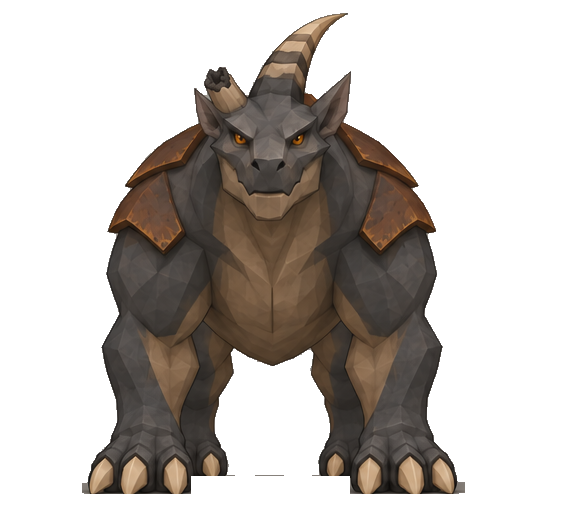
Original drawing; background removed only in the modeling copy.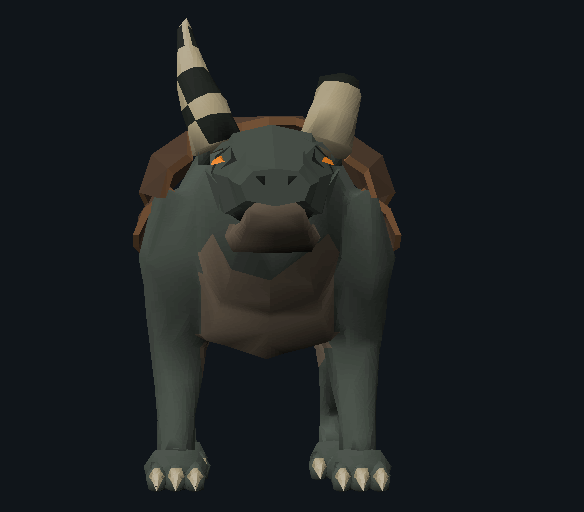
Previous concept-guided mesh — common camera.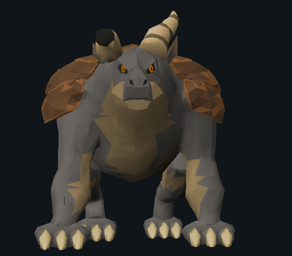
New static reconstruction — common camera.Left
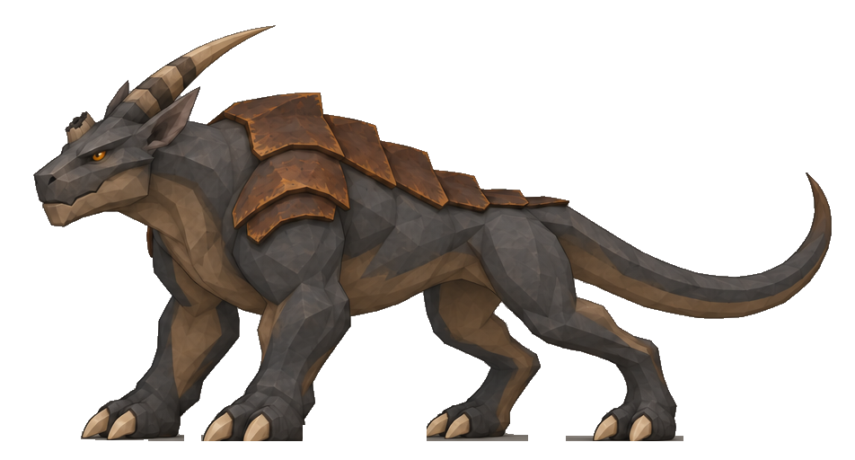
Original drawing; background removed only in the modeling copy.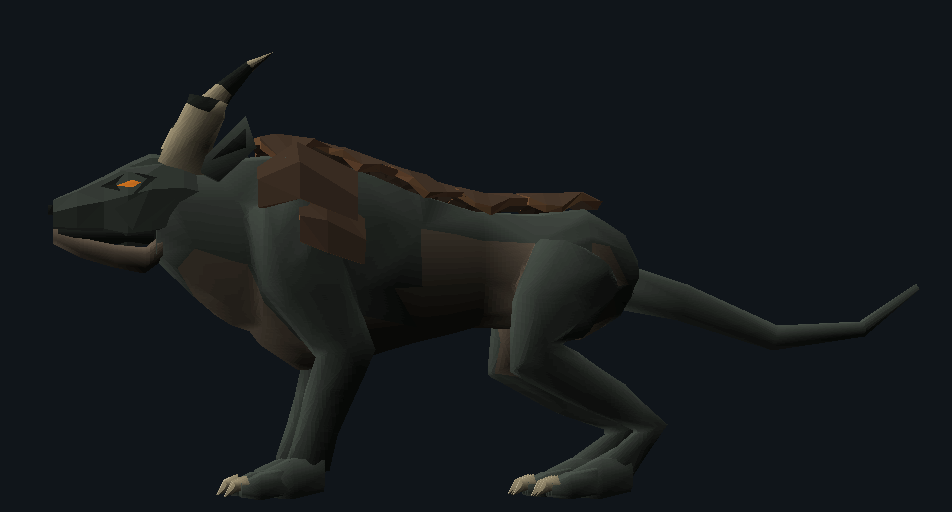
Previous concept-guided mesh — common camera.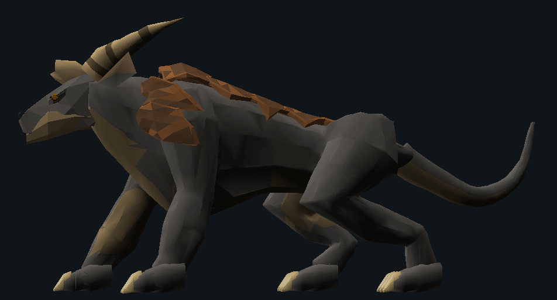
New static reconstruction — common camera.Rear
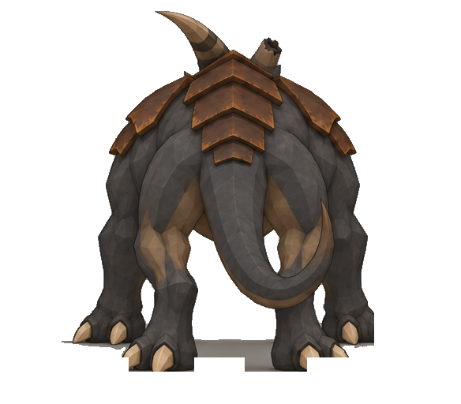
Original drawing; background removed only in the modeling copy.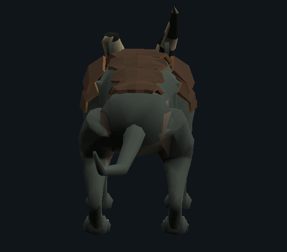
Previous concept-guided mesh — common camera.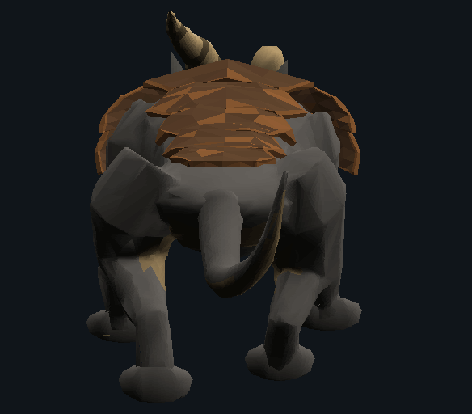
New static reconstruction — common camera.Quarter
Native close views
Each pair uses identical submission, lighting and camera settings. These are actual native model renders.
Face Front
Face Quarter
Shoulder
Forepaw
Hock
Real geometry, without color assistance
The gray model has exactly the same vertices, faces and native shading flags. Only face colors change. Reference images and construction cages never enter the native export.
Front
Quarter
Side
Rear
Above
Gameplay
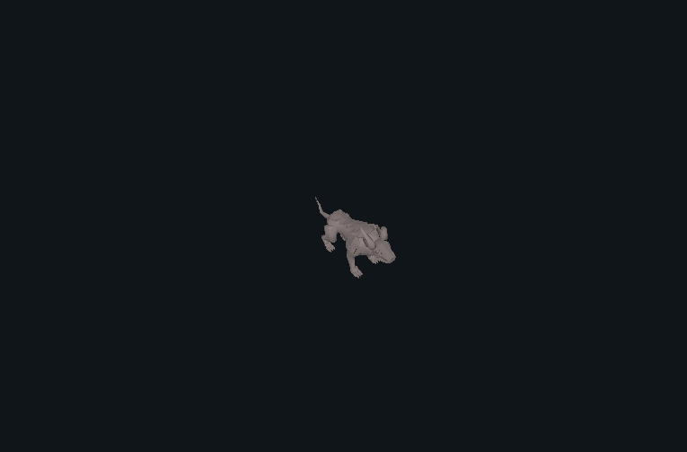
Previous — uniform grayReconstruction — uniform grayMeasured evidence and its limits
Outline overlap rises in all four frozen views. This is not a perceptual-quality score, proof of anatomical correctness or an approval threshold. Mask cleanup, hidden surfaces and the inconsistent illustrations limit its interpretation.
| Drawing view | Previous IoU | New IoU | Mean contour distance, previous → new |
|---|
| front | 0.631 | 0.790 | 23.9 → 12.2px |
| left | 0.592 | 0.792 | 19.7 → 9.2px |
| rear | 0.535 | 0.689 | 24.6 → 15.3px |
| quarter | 0.493 | 0.661 | 28.1 → 15.6px |
57 named3D estimates; per-observation uncertainty and camera residuals are recorded in constraints.json. The fitted side view has low elevation; elevated standard views expose the armor surfaces as well.
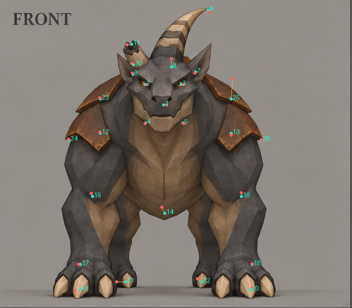
Front calibration: observed estimate, projected framework and residual.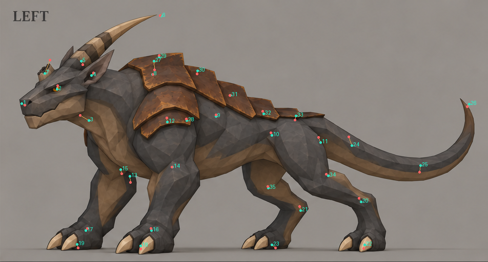
Side calibration: estimates, not exact ground truth.Integrity checks
4,331 vertices · 8,037 native triangles; previous mesh 3,621 triangles. Saved Blender source re-exports byte for byte. A fresh build reproduces the native model and all ten whole-model renders exactly. Native vertices, faces, colors and shading flags decode exactly. Twelve toes, twelve claws, five dorsal and four shoulder shells are counted. No image textures, armature, animation actions or skin labels participate.
All 23 frozen baseline files and the five other recorded workspaces are unchanged. The original workbench executable hash is unchanged. A small new camera adapter submits image offsets to the existing native camera API; no renderer implementation changed.
The export reports 400 collapsed source triangles and 443 boundary edges, with zero remaining degenerate triangles and zero nonmanifold index edges. Separate shells and fine quantized details are not claimed to form a watertight production asset. See full verification.
What still needs artistic work
- The face remains an angular approximation: forehead, cheek transition, socket shape and eye expression still fall short of the illustration.
- Shoulder shields and dorsal shingles remain too regular and lack the reference's authored wear and local plane hierarchy.
- Chest/limb color boundaries remain coarse; the full boundary-cut trial was rejected because native quantization introduced thin-triangle artifacts.
- The reference's thigh/calf silhouette, paw weight and fine muscle planes are not fully reproduced.
- A single coherent static stance cannot exactly match all four inconsistent drawings. Tail, rear legs and quarter-view perspective remain approximate.
- Native export has 443 boundary edges and 400 collapsed source triangles, largely fine details/seams. No watertight or production-ready claim is made.
Preserved iterations
18 mesh checkpoints are retained. Full Blender files remain in the private experiment; published history includes original models, construction snapshots and native renders. Candidate 14 is explicitly rejected. Candidate 16 freezes face ordering; candidates 17–18 refine facial proportions and jaw exposure.
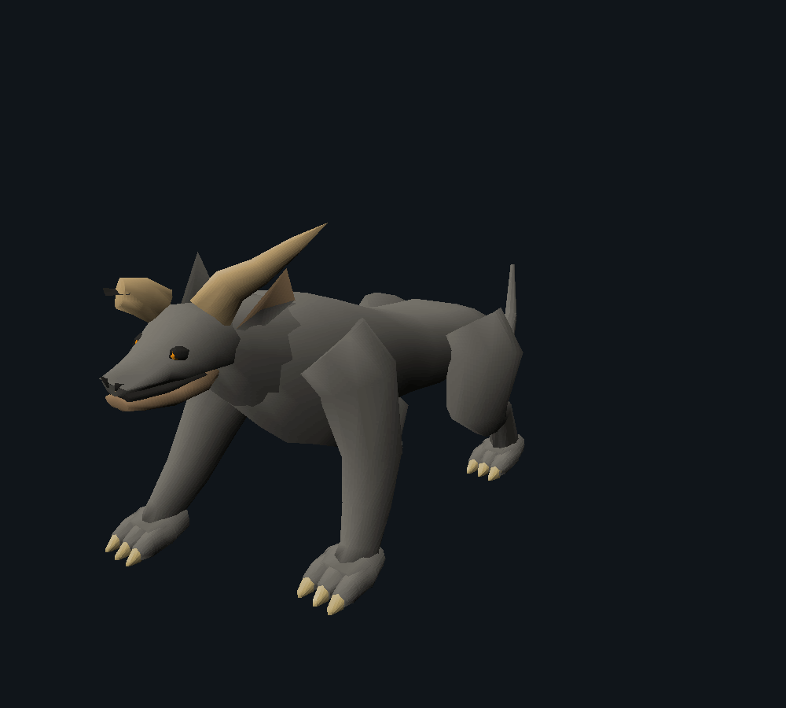
00-measured-blockout ·3496 triangles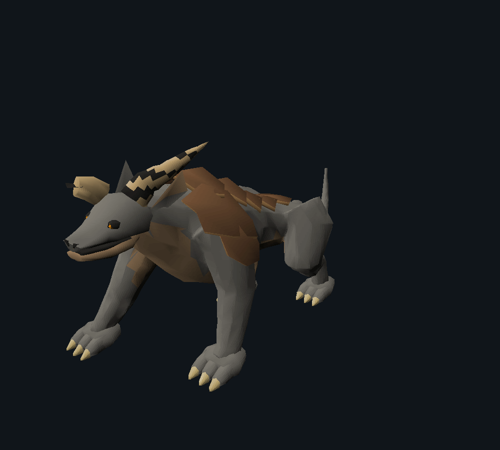
01-anatomy-and-shingles ·7122 triangles02-orbits-and-muscle-planes ·7373 triangles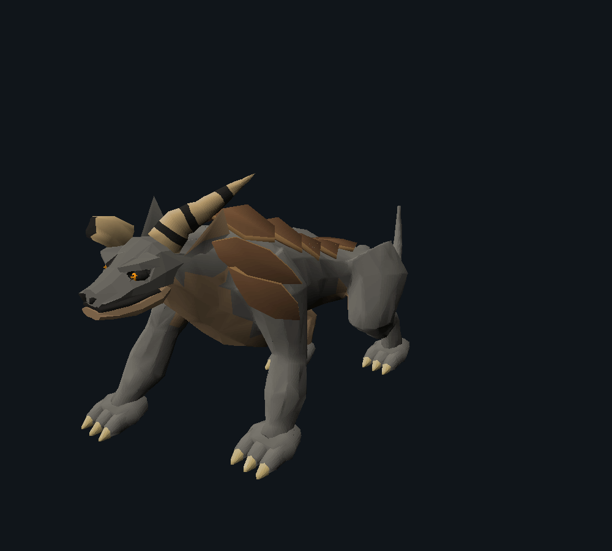
03-focused-brow-and-muzzle ·7443 triangles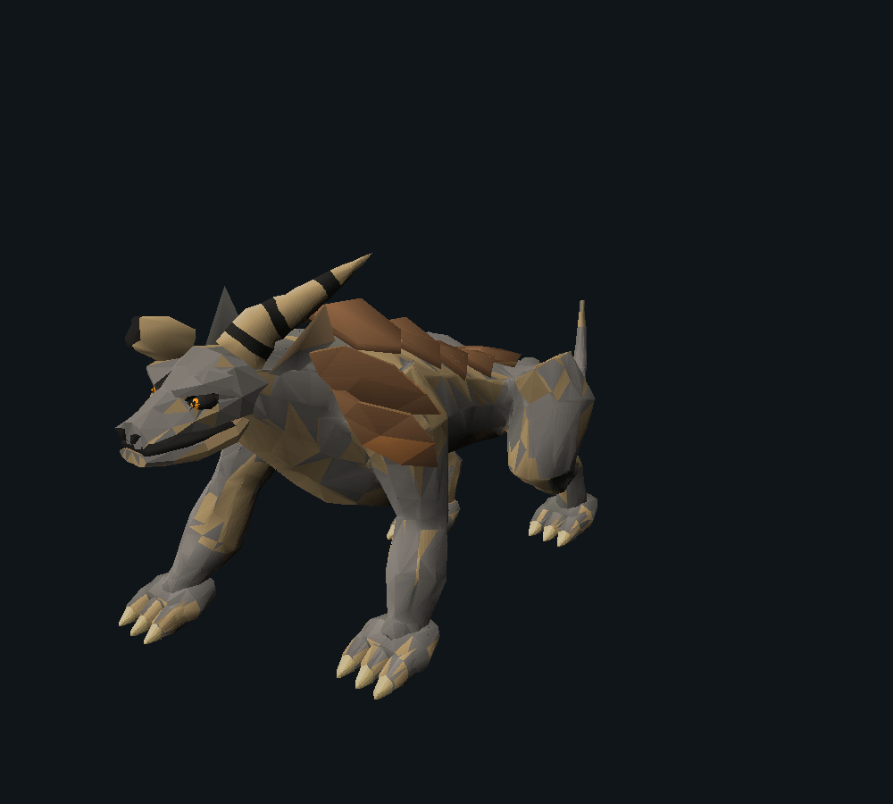
04-reference-material-regions ·7466 triangles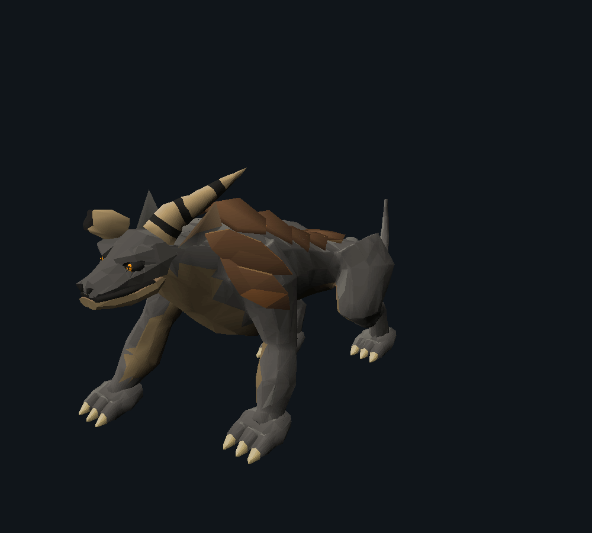
05-coherent-anatomical-color ·7466 triangles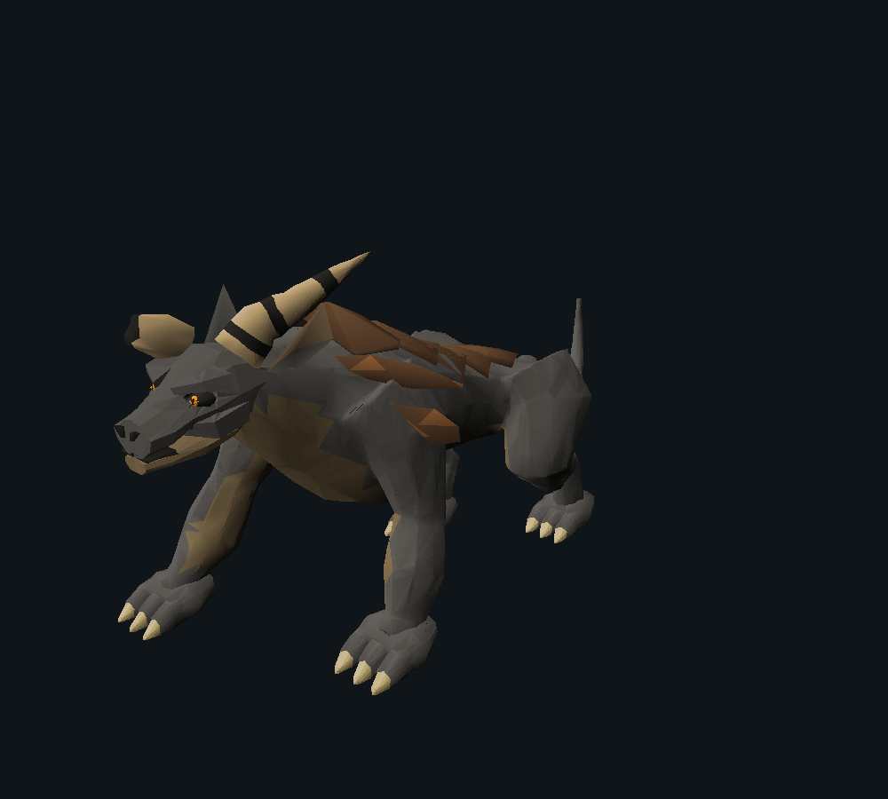
06-muzzle-and-armor-proportions ·7536 triangles08-anatomical-face-topology ·6663 triangles09-solid-plate-clearance-and-orbits ·7238 triangles10-oblique-brow-and-nasal-planes ·7180 triangles11-wrapped-shoulder-shells-and-mandible ·7181 triangles12-faceted-rimmed-plates-and-hide-values ·8012 triangles13-sternum-and-digitigrade-chains ·8029 triangles14-anatomical-material-boundaries ·10226 triangles 15-static-review-candidate ·8029 triangles16-reproducible-static-review ·8029 triangles17-facial-proportion-calibration ·8037 triangles
15-static-review-candidate ·8029 triangles16-reproducible-static-review ·8029 triangles17-facial-proportion-calibration ·8037 triangles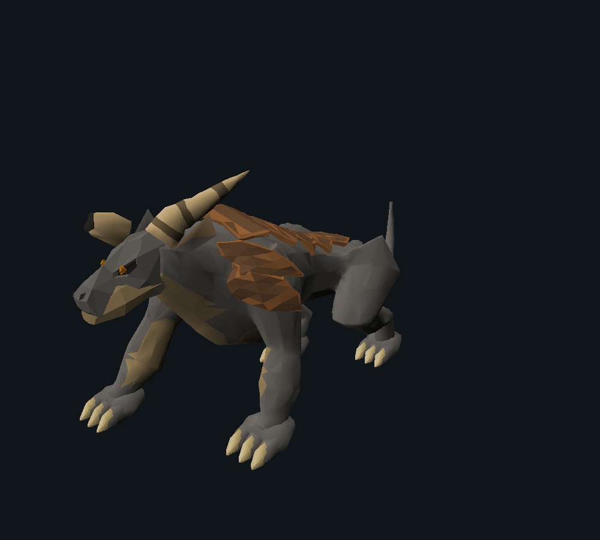
18-jaw-sides-and-orbital-rims ·8037 trianglesEditable source and audit
No cache archives, cache models, texture files, environment pixels, binaries or runtime palettes are included in this original-only publication. No map, production registry or gameplay content was changed.